This page is a tour of the whole screen: the menu bar, the cutting instructions on the left, the render in the middle, the settings on the right, and every mouse gesture and keyboard shortcut the studio has. The screenshots below show the stone the studio opens with.
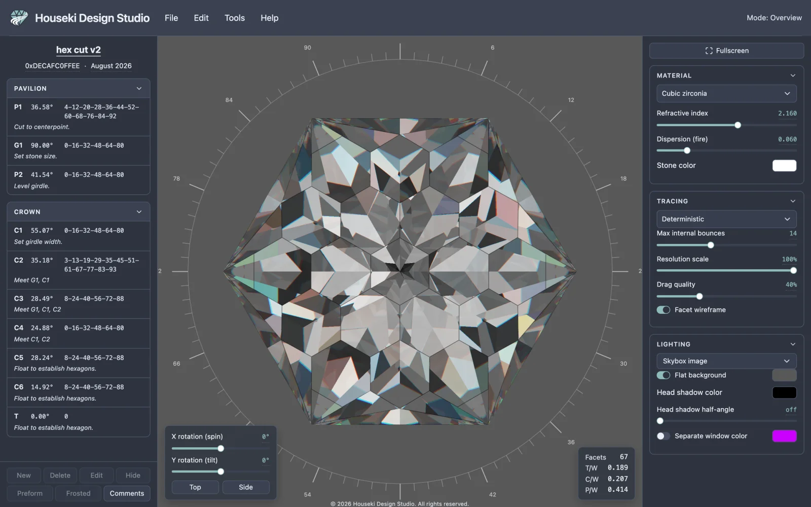
The screen has four main areas, always on screen, plus a fifth that only appears while you are editing a facet:
Everything here runs from a single page in your browser, and nothing is sent to a server (see "Saving, undo and sharing" below). If you would rather keep a copy that opens without needing an internet connection, see Saving the studio to your computer.
The studio's name sits top left. Beside it is the menu bar: File, Edit, Tools and Help. Click a menu to open it; click its button again, press Escape, or click anywhere else to close it. While one menu is open, moving the pointer onto another menu's button opens that one straight away.
At the top right, Mode: Overview always tells you which mode the page is in — it changes to say so whenever you open a mode such as editing a tier, scaling height, resizing the girdle, or the cutting assistant.
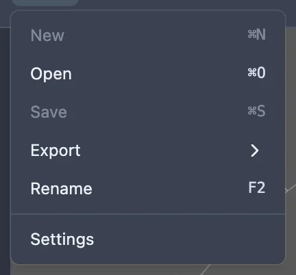
| Item | What it does |
|---|---|
| New, Save | Greyed out; not available yet. |
| Open | Opens a file picker for a .obj,
.asc, .gem or .gcs file. Cmd+O on a
Mac, Ctrl+O elsewhere. |
| Export | A submenu of file formats to save the current design as. See "Saving, undo and sharing" below. |
| Rename | Opens the cut name at the top of the cutting instructions for editing, with its text selected. F2 does the same. |
| Settings | Opens the settings dialog: light or dark mode, and how many decimal places an angle shows. See "Settings, theme and precision" below. |
| Item | What it does |
|---|---|
| Undo | Steps the design back one change. Cmd+Z on a Mac, Ctrl+Z elsewhere. Greyed out when there is nothing to undo. |
| Redo | Steps it forward again. Shift+Cmd+Z on a Mac, Ctrl+Shift+Z (or Ctrl+Y) elsewhere. |
| Resize girdle | Opens girdle resizing. See Girdle resizing. |
| Scale height | Opens tangent-ratio height scaling. See Tangent ratio height scaling. |
| Rotate by index, Reverse index order, Flip crown and pavilion, Manual optimizer | Greyed out, with a tooltip explaining what each will do; not built yet. See Rotation by index, Crown and pavilion flipping and Manual optimizer. |
A greyed-out item that opens a mode (Resize girdle, Scale height) says why in its tooltip: usually because another mode, such as editing a tier, is already open. Only one mode can be open at a time.
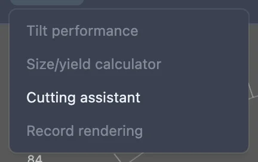
| Item | What it does |
|---|---|
| Cutting assistant | Walks you through cutting the design tier by tier. See Cutting assistant. |
| Tilt performance, Size/yield calculator, Record rendering | Greyed out, with a tooltip explaining what each will do; not built yet. See Tilt performance analyzer, Size and yield calculator and Recording renders. |
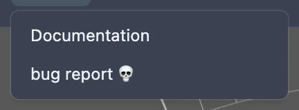
Documentation opens this site in a new tab; bug report 💀 opens the project's issue tracker in a new tab.
On the left, the cutting instructions read like a sheet you would take to the machine: a title, an author and a date, then every tier of the pavilion and the crown in the order they are cut.
The name, author and date are each a text box you click to edit: click one, type, then press Enter or click away to apply it, or Escape to cancel. The name is also what File > Rename and F2 open.
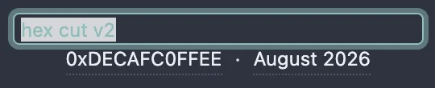
Below the header are two foldable sections, Pavilion then Crown — click a section's title to fold or unfold it. Each row is one tier: its letter and number (such as P1 or C3), its angle, the teeth it is cut at, and, in italics, any cutting note for it. A tier kept only for its meetpoints shows its teeth in curly braces.
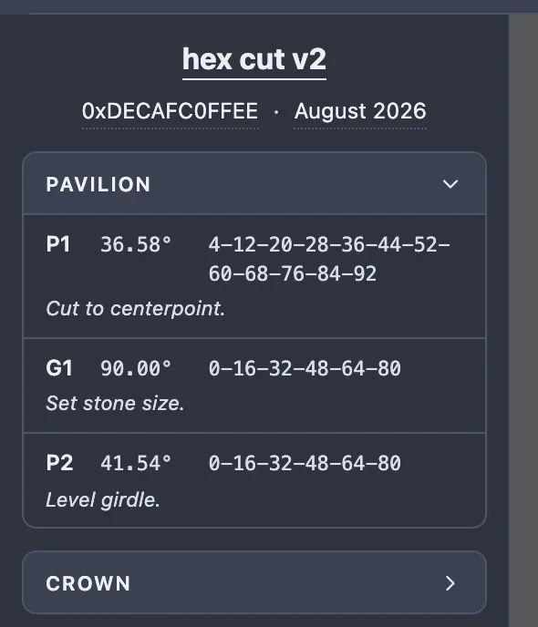
Click a row to select its tier — the same tier highlights on the stone. Double-click a row (anywhere but its cutting note) to open that tier for editing; see "Editing a facet" below. With a row focused, Space selects it the same way a click does; Enter does too if it is not already the selected row, but on the row that already is, Enter instead opens it for editing, the same as Enter anywhere else on the page while that tier is selected. Alt+↑ / Alt+↓ moves the focused row up or down within its own section. You can also press and drag a row to reorder it; a line shows where it will land, and a pavilion row can never be dropped among the crown's, or the other way round.
The plain ↑/↓ keys (no Alt, and from anywhere on the page, not only a focused row) move the selection itself instead: ↓ selects the next tier and ↑ the previous one, running down the pavilion and into the crown and stopping at either end, rather than wrapping round. With nothing selected, ↓ picks the first tier and ↑ the last.
Once a row is selected, click its cutting note to type one; the note stays with that tier even if it is later reordered.
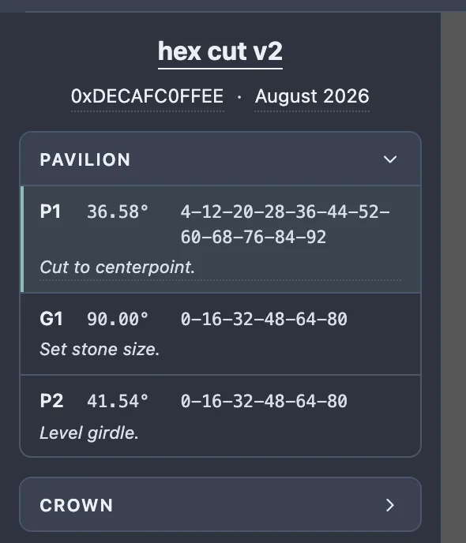
Pinned under the tier tables, these buttons act on whichever tier is selected (except Comments, which needs no selection). Selecting a tier brings most of them alive, as it does here. In a narrow pane the seven buttons wrap onto two rows, New/Delete/Edit/Hide over Preform/Frosted/Comments; drag the pane wider and, past about 540px, they settle into one row in the same order.

| Button | What it does |
|---|---|
| New | Adds a new tier, copied from the selected one, and opens it for editing. |
| Delete | Removes the selected tier. Backspace or Delete does the same, from anywhere on the page a text field isn't focused. |
| Edit | Opens the selected tier for editing — the same as double-clicking its row, or pressing Enter. |
| Hide (reads Show for a hidden tier) | Hides the tier's facets from the stone without deleting them; a hidden tier's whole row greys out. |
| Preform | Marks the tier as a preform, used to set up meetpoints — its teeth then show in curly braces. It is still cut into the stone as usual. |
| Frosted | Marks the tier as frosted: it darkens in the list, and in the Monte Carlo renderer its facets render as frosted glass. |
| Comments | Opens a dialog for the design's own header and footer comments, and its shape, size and refractive-index range — the free-text fields a GemCad file carries. Cmd/Ctrl+Enter saves; Escape or Cancel discards. |
Backspace, Delete, Enter and the ↑/↓ keys below work from anywhere on the page, not only with a row focused — except while typing in a text field, a dialog is open, or a dropdown has focus, and ↑/↓ also do nothing while scaling height, resizing the girdle or the cutting assistant is open.
Every button and field on the whole screen has a tooltip: rest the pointer on one for about half a second and an explanation appears beside it.
The seam on the pane's right edge is also its handle: drag it to make the pane wider or narrower (it has a minimum and a maximum width), or focus it with Tab and use ←/→ to move it a step at a time, or Home/End to snap it to its narrowest or widest. The render settings panel's own left edge works the same way. Your chosen widths are remembered.
The middle of the screen is the stone itself, with a ring of ticks around it (the index gear's teeth) that fades in when the stone is close to face-up or face-down.
| Gesture | What it does |
|---|---|
| Drag | Orbits the stone around its centre. |
| Scroll the wheel | Zooms in or out. |
| Click a facet | Selects its tier — the same tier highlights in the cutting instructions. Clicking empty space clears the highlight. |
| Double-click a facet | Turns the view to face it square on. If the facet belongs to a tier, this opens that tier for editing instead of turning (see "Editing a facet" below). |
| Drag a design file onto the render | Loads it, the same as File > Open. A hint appears while a file is over the render. |
Over the bottom left of the render, two sliders turn the stone directly: X rotation (spin) and Y rotation (tilt), with Top and Side buttons under them that jump straight to face-up or side-on. They follow whatever orbiting or double-clicking a facet has already done, and their numbers are also click-to-edit text boxes.
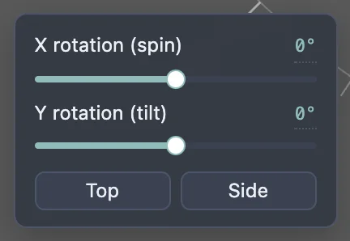
Over the bottom right of the render, this shows the stone's facet count and three proportions, each a ratio to the girdle's width across its short axis: T/W (the table's width), C/W (the crown's height) and P/W (the pavilion's height). A ratio the stone does not have, such as a table on a pointed stone, shows a dash.
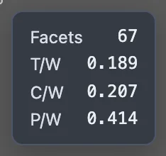
Double-click a tier's row in the cutting instructions, double-click one of its facets on the stone, or select it and click Edit in the tier toolbar, to open it for editing. The top bar's mode readout then reads Mode: Editing followed by the tier's id.
A thin sub bar appears above the render, holding the index gear button and a scrolling ruler of its teeth, with Symmetry and Offset fields (or, in arbitrary mode, a box of teeth typed by hand). Drag the ruler, or scroll over it, to move the facet round the stone; the index changes as it passes each tooth.
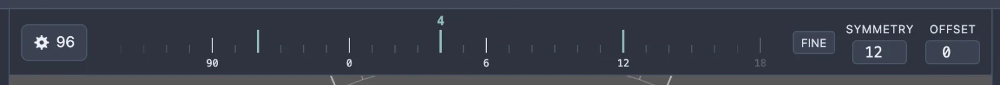
In place of the render settings, the right-hand panel becomes two vertical scales, Angle and Depth: drag either (or scroll over it, or use the arrow keys once it has focus) to cut the facet there and then, with the stone updating as you go. Click the angle reading to type an exact value. A cutting plane is drawn over the stone showing exactly where the facet being edited sits.
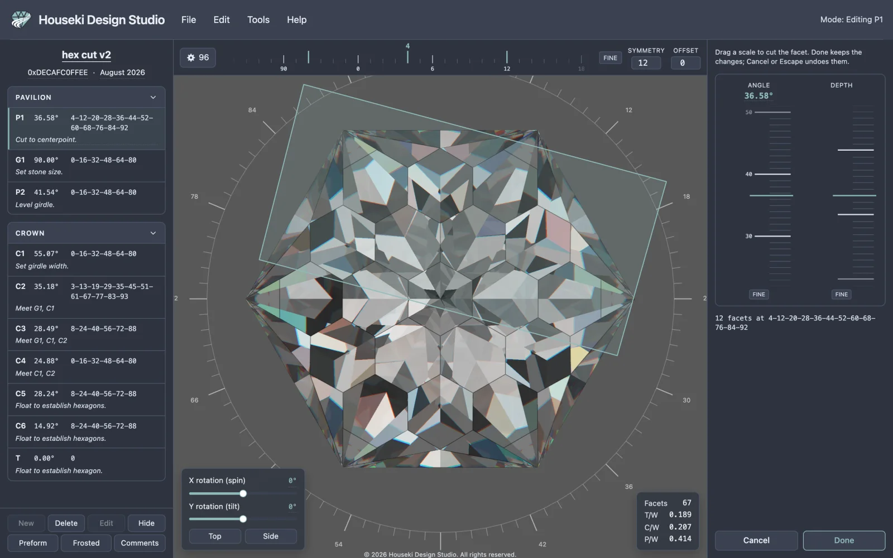
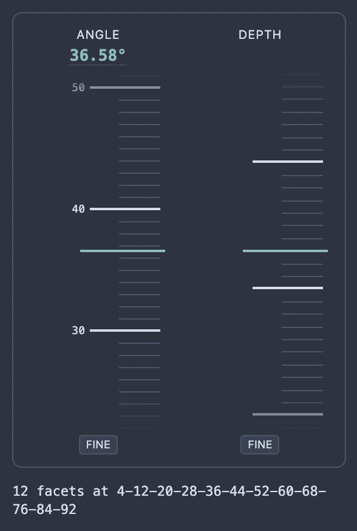
Cancel stops editing and undoes every change made since it began; Escape does the same. Done stops editing and keeps the changes.
Only one tier can be open for editing at a time: while a facet is being edited, the other tier-toolbar buttons and rows, and double-clicking a different facet, do nothing until you choose Cancel or Done.
Clicking the gear button opens the index gear dialog: the number of teeth on the index wheel, a Fractional teeth checkbox, and an Arbitrary mode checkbox that switches the sub bar to typed indexes. Enter applies (when the fields are valid); Escape or Cancel closes it unchanged.
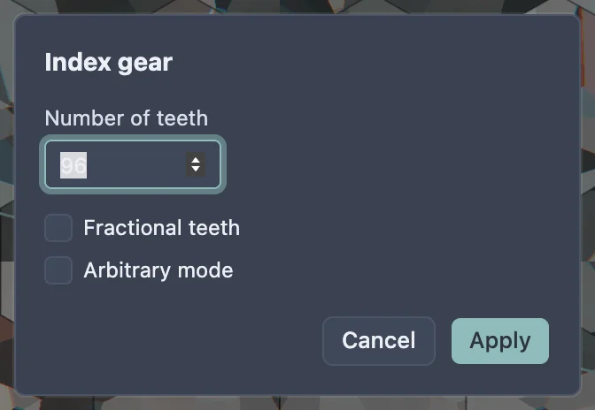
See Editing facets by tier for the full detail of editing, adding, deleting, hiding and reordering tiers.
On the right, foldable sections choose how the stone is rendered: Material (a preset, refractive index, dispersion and stone color), Tracing (which renderer, and its quality settings) and Lighting (the lighting model and its colors). Click a section's title to fold or unfold it — here is Tracing unfolded, as an example:
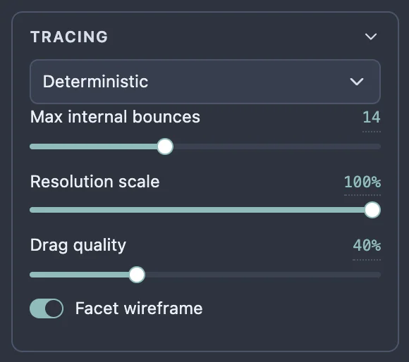
Click a color swatch, such as Stone color, to open a picker: hue, saturation, value and opacity sliders, and a Pick from screen button that samples a color from anywhere on your screen.
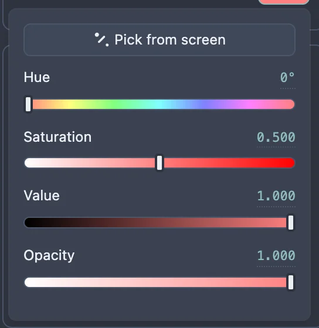
See Deterministic renderer and Monte Carlo renderer for what the two renderers under Tracing do.
At the top of the panel, Fullscreen hides the top bar and the cutting instructions pane, leaving only the stone and this settings panel. Click it again — labelled Exit fullscreen — or press Escape, to bring them back.
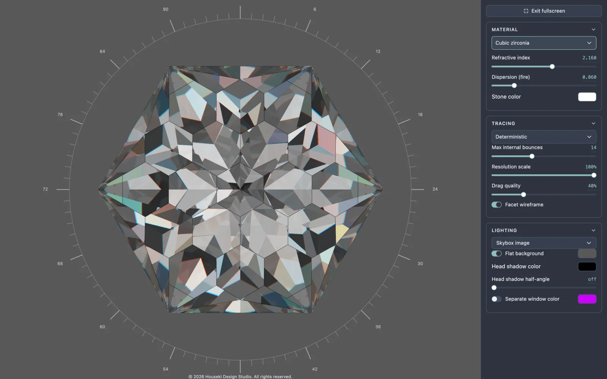
Choose File > Settings for the studio's own preferences: a light/dark toggle, and how many decimal places an angle is shown to in the cutting instructions and the angle scale. Both are remembered.
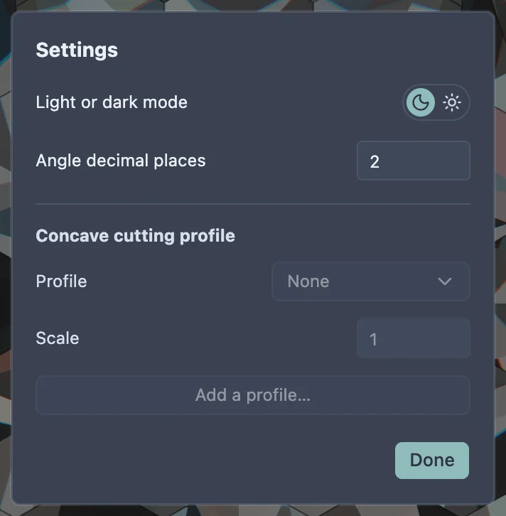
Clicking the toggle switches the whole page — this documentation included — between dark and light colors.
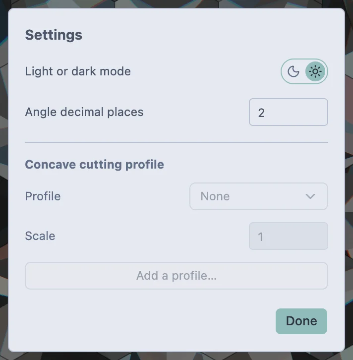
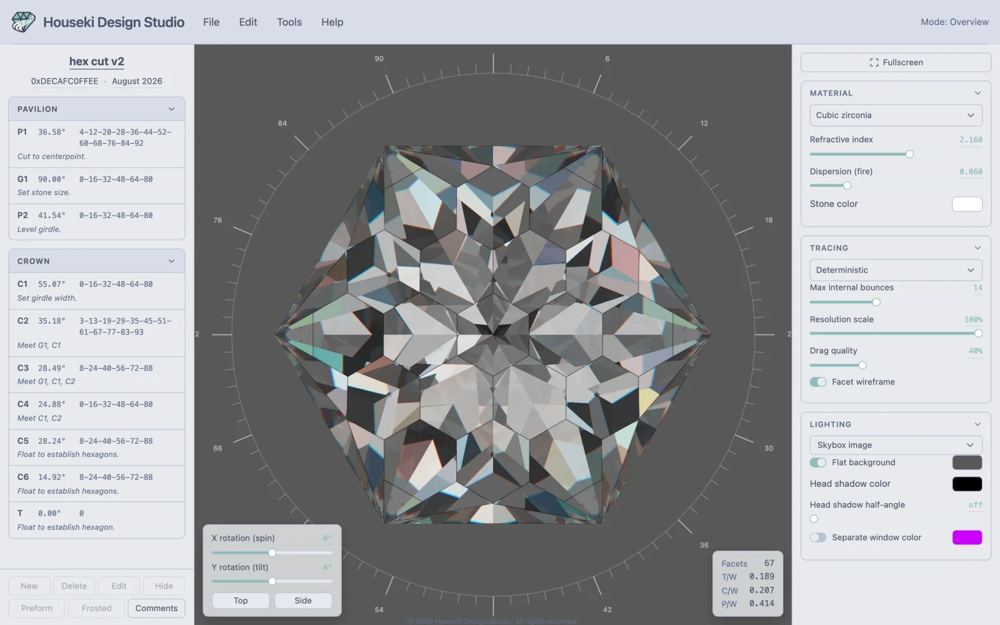
The Concave cutting profile section of the Settings dialog is a placeholder: its fields cannot be typed into or chosen yet.
Every change you can undo is also saved into the page's own address as you make it — there is no separate save button, and nothing is sent to a server. Copy the address bar to send someone your design; opening it restores it exactly. See Sharing designs by link.
File > Export writes the design out as a
file instead — GemCad's .gem or .asc, Gem Cut Studio's
.gcs, Wavefront .obj, .stl, or a PDF cutting sheet. See
Saving and exporting for opening and saving files.
| Shortcut | Does |
|---|---|
| Cmd+O (Mac) / Ctrl+O (elsewhere) | File > Open |
| Cmd+S (Mac) / Ctrl+S (elsewhere) | Your browser's own "save page" shortcut, not one of the studio's — File > Save itself is greyed out. See Saving the studio to your computer. |
| Hover any control | Shows its tooltip after about half a second |
| Cmd+Z (Mac) / Ctrl+Z (elsewhere) | Undo |
| Shift+Cmd+Z (Mac) / Ctrl+Shift+Z (elsewhere) | Redo |
| Ctrl+Y (not on a Mac) | Redo |
| F2 | Renames the design (opens the cut name field) |
| Backspace / Delete | Deletes the selected tier — the same as the tier toolbar's Delete button. Nothing while a text field, a dialog or a dropdown has focus. |
| Enter | Opens the selected tier for editing — the same as Edit — unless focus is on a button, a link or a menu item, which it presses instead as usual. Nothing while a text field, a dialog or a dropdown has focus. |
| ↑ / ↓ | Moves the tier selection to the previous or next tier, down the pavilion and into the crown, stopping at either end rather than wrapping; with nothing selected, ↓ picks the first tier and ↑ the last. Nothing while a text field, a dialog or a dropdown has focus, or while scaling height, resizing the girdle or the cutting assistant is open. |
| Escape | Closes an open menu or dialog. Otherwise: leaves edit mode, or scale height, or the cutting assistant, or resize girdle mode, whichever is open; with none open, leaves fullscreen. |
| ← / → (only while the cutting assistant is open) | Previous / next cut |
| Shift+← / Shift+→ (cutting assistant open) | Previous / next tier |
| Gesture | Does |
|---|---|
| Drag | Orbits the stone |
| Scroll | Zooms in or out |
| Click a facet | Selects its tier; clicking empty space clears the selection |
| Double-click a facet | Turns to face it, or opens its tier for editing if it belongs to one |
| Drag a file onto it | Loads that design |
| Gesture | Does |
|---|---|
| Click a row | Selects its tier |
| Double-click a row (not its note) | Opens that tier for editing |
| Space (row focused) | Same as clicking it |
| Enter (row focused, not yet selected) | Same as clicking it: selects it |
| Enter (row focused and already selected) | Opens it for editing — the same as the page-wide Enter above |
| Alt+↑ / Alt+↓ (row focused) | Moves the tier up/down within its section |
| Press and drag a row | Reorders it within its section |
| Click a section's title (Pavilion, Crown) | Folds or unfolds it |
The plain ↑/↓ keys, without Alt, are not a row gesture — they move the tier selection itself from anywhere on the page; see "Anywhere on the page" above.
| Gesture | Does |
|---|---|
| Click it | Opens a text box, with its text selected where that makes sense |
| Enter, or clicking away | Applies the typed text |
| Escape | Cancels, keeping the old value |
| Gesture | Does |
|---|---|
| Drag the thumb | Changes the value |
| Click the number beside it | Opens it for typing an exact value |
| Gesture | Does |
|---|---|
| Drag the tape | Moves it |
| Scroll over it | Moves it |
| ↑/↓ (any of the three, focused); also ←/→ on the index ruler | Moves by one step |
| Page Up / Page Down | Moves by one large tick |
| Home (index ruler) / Home, End (angle, depth) | Jumps to 0, or to the near/far end of the scale |
| Hold Shift while dragging, or click Fine | Moves five times slower, for precise placing |
| Click the angle reading | Opens it for typing an exact value (the depth scale shows no number to click) |
| Shortcut | Does |
|---|---|
| Enter (index gear dialog) | Applies, if the fields are valid |
| Cmd/Ctrl+Enter (comments dialog) | Saves the comments |
| Escape, or clicking outside it | Closes the dialog without applying anything |
| Gesture | Does |
|---|---|
| Drag the seam between two panes | Widens or narrows the pane beside it |
| ←/→ (seam focused) | Moves it a step |
| Home / End (seam focused) | Moves it to its narrowest or widest |